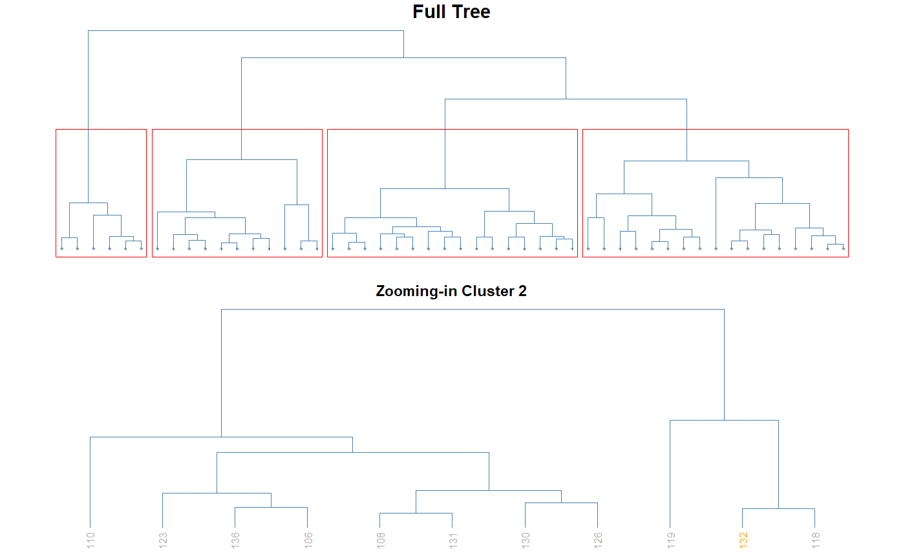
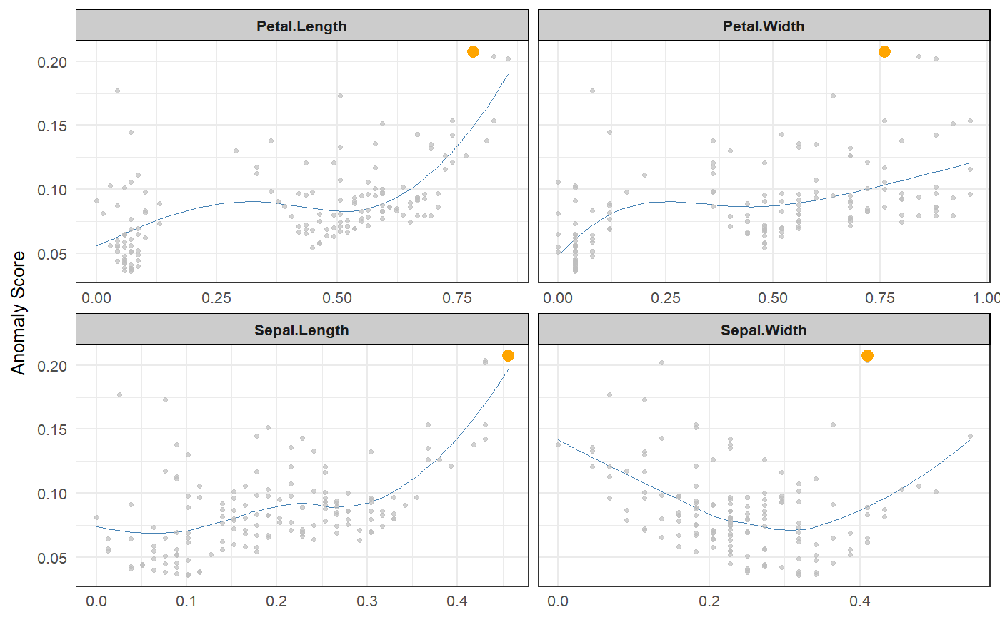
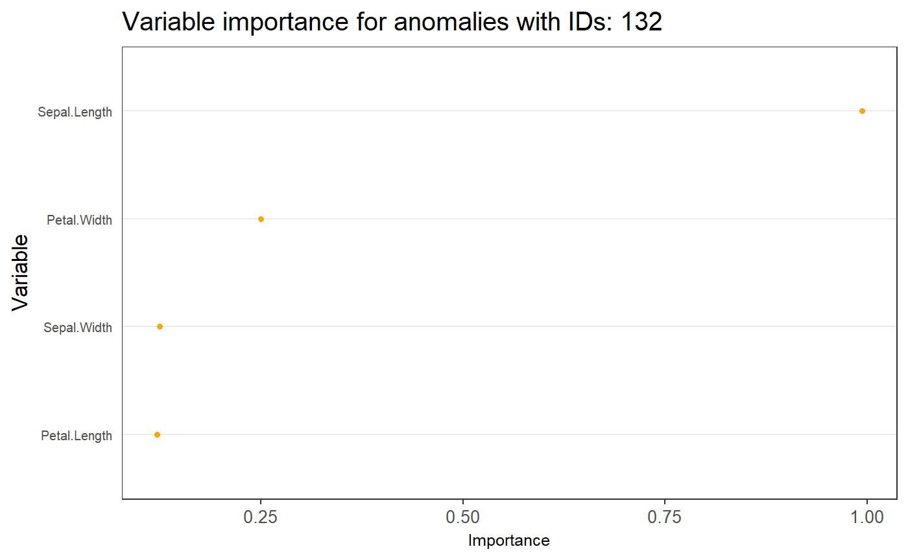
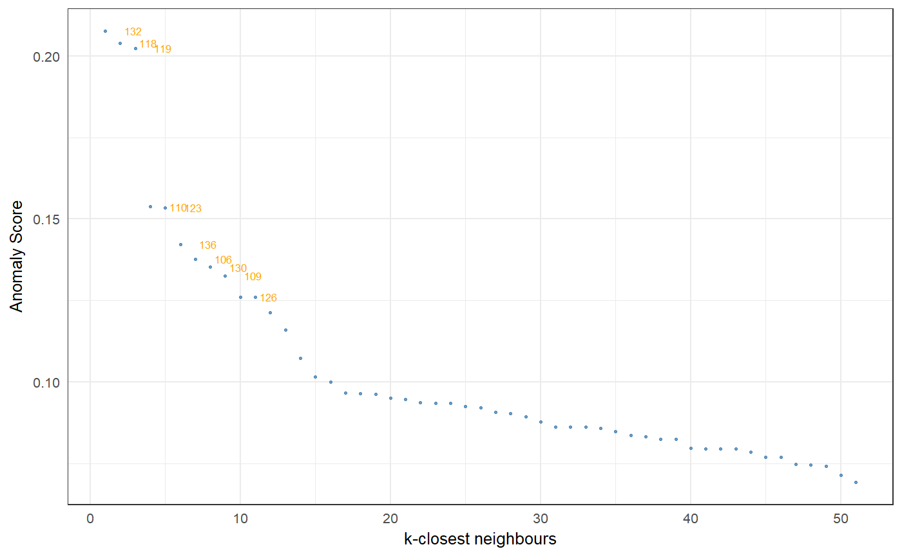
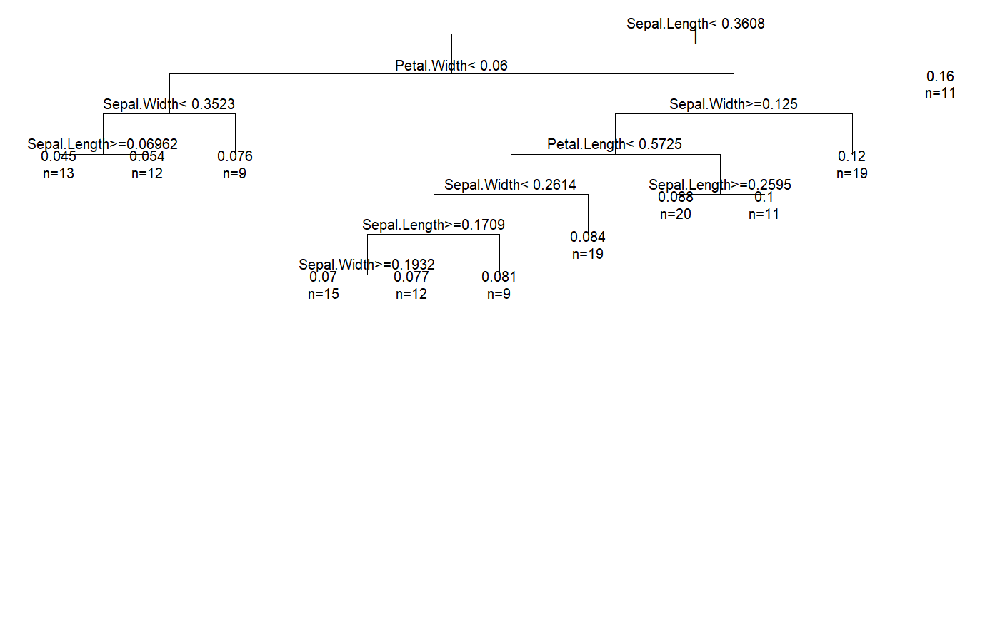

Data visualizations of anomaly score locally around a specific data point
# S3 method for stranger plot(x, type = "cluster", id = ".id", score = NULL, anomaly_id = NULL, ...) # S3 method for fortifiedanomaly plot(x, type = "feature_importance", id = ".id", anomaly_id = NULL, score = NULL, ...) # S3 method for anomalies plot(x, type = "feature_importance", id = ".id", anomaly_id = NULL, ...) # S3 method for singular plot(x, type = "cluster", id = ".id", score = NULL, anomaly_id = NULL, ...)
| type | is the name of the visualization; (1) A hierarchical clustering, named "cluster", showing among the top n-anomaly which records belongs to the same cluster a specific record. Finding the commun pattern amoung the cluster may lead to the orign of of the specifi record score. (2) A dots plot, named "neighbours", showing the relationship between the anomly score and each feature for the k nearest neighbours of a specific record. (3) A bar chart, named "feature_importance", showing how sensitive is the anomaly score of a specific record to each of feature. This may help to identify the features behind the score. (4) A dots plot, names "score_decline", showing the decrease in anomaly score among the k nearest neighbours of a specific record. The shape indicates how extrem and how frequent is the anomaly score of a speicif record amoung its neighbours. (5) A Regression tree, named "regression_tree", showing the roots to high score around a specific record. |
|---|---|
| id | is the colname with records IDs |
| score | is the colname which contains the anomaly score |
| anomaly_id | is the record ID you want to investigate |
| data | is either of class dataframe, stranger or anomaly. It contains the observations; each row represents an observation and each variable is stored in one column. It must have at least one column with IDs and one column with the anomaly score for each ID. |
| check | logical indicating if object data should be checked for validity. The default is TRUE, this check is not necessary when data is known to be valid such as when it is the direct result of stranger(). |
| keep | character vector: names of columns to keep (filter) |
| drop | character vector: names of columns to drop (filter) |
| n.cluster | is the number of cluster groups to emphasis. This parameter must only be specified with type ="cluster". |
| n.anom | is the number of top anomalies to be considered. This parameter must only be specified with type ="cluster". |
| k | is the number of neighbours to be considered. This parameter must always be specified, except with type = "cluster". |
| n_label | specifies the number of data point to be labelled in the plot. This parameter must only be specified with type ="scores_decline". |
A plot
Function that produces visualizations to understand the anomaly score locally around a specific data point. We believe this should help people to trust scores a made by models even if they don’t fully understand them. Today, 5 visualisazions are implemented; (1) A hierarchical clustering, named "cluster", showing among the top n-anomaly which records belongs to the same cluster a specific record. Finding the commun pattern amoung the cluster may lead to the orign of of the specifi record score. (2) A dots plot, named "neighbours", showing the relationship between the anomly score and each feature for the k nearest neighbours of a specific record. (3) A bar chart, named "feature_importance", showing how sensitive is the anomaly score of a specific record to each of feature. This may help to identify the features behind the score. (4) A dots plot, names "score_decline", showing the decrease in anomaly score among the k nearest neighbours of a specific record. The shape indicates how extrem and how frequent is the anomaly score of a speicif record amoung its neighbours. (5) A Regression tree, named "regression_tree", showing the roots to high score around a specific record.
#> Error in `:=`(g, .GRP): Check that is.data.table(DT) == TRUE. Otherwise, := and `:=`(...) are defined for use in j, once only and in particular ways. See help(":=").#> Error in -".id": invalid argument to unary operatorresult <- fortify(anom1) investigate(result, type="cluster", id = ".id", score = "knn_k_10_mean", anomaly_id = 10, n.cluster = 4, n.anom = 50)#>investigate(result, type="neighbours", id = ".id", score = "knn_k_10_mean", anomaly_id = 10, k = 200)#>#> Warning: k should be less than sample size!#> Cover tree only found 149 neighbors for point 132. #> 150 points are in the vector:Cover tree only found 149 neighbors for point 118. #> 150 points are in the vector:Cover tree only found 149 neighbors for point 106. #> 150 points are in the vector:Cover tree only found 149 neighbors for point 136. #> 150 points are in the vector:Cover tree only found 149 neighbors for point 110. #> 150 points are in the vector:Cover tree only found 149 neighbors for point 141. #> 150 points are in the vector:Cover tree only found 149 neighbors for point 137. #> 150 points are in the vector:Cover tree only found 149 neighbors for point 101. #> 150 points are in the vector:Cover tree only found 149 neighbors for point 145. #> 150 points are in the vector:Cover tree only found 149 neighbors for point 119. #> 150 points are in the vector:Cover tree only found 149 neighbors for point 123. #> 150 points are in the vector:Cover tree only found 149 neighbors for point 142. #> 150 points are in the vector:Cover tree only found 149 neighbors for point 149. #> 150 points are in the vector:Cover tree only found 149 neighbors for point 115. #> 150 points are in the vector:Cover tree only found 149 neighbors for point 125. #> 150 points are in the vector:Cover tree only found 149 neighbors for point 121. #> 150 points are in the vector:Cover tree only found 149 neighbors for point 144. #> 150 points are in the vector:Cover tree only found 149 neighbors for point 116. #> 150 points are in the vector:Cover tree only found 149 neighbors for point 146. #> 150 points are in the vector:Cover tree only found 149 neighbors for point 103. #> 150 points are in the vector:Cover tree only found 149 neighbors for point 140. #> 150 points are in the vector:Cover tree only found 149 neighbors for point 113. #> 150 points are in the vector:Cover tree only found 149 neighbors for point 105. #> 150 points are in the vector:Cover tree only found 149 neighbors for point 129. #> 150 points are in the vector:Cover tree only found 149 neighbors for point 133. #> 150 points are in the vector:Cover tree only found 149 neighbors for point 120. #> 150 points are in the vector:Cover tree only found 149 neighbors for point 73. #> 150 points are in the vector:Cover tree only found 149 neighbors for point 135. #> 150 points are in the vector:Cover tree only found 149 neighbors for point 126. #> 150 points are in the vector:Cover tree only found 149 neighbors for point 108. #> 150 points are in the vector:Cover tree only found 149 neighbors for point 131. #> 150 points are in the vector:Cover tree only found 149 neighbors for point 130. #> 150 points are in the vector:Cover tree only found 149 neighbors for point 109. #> 150 points are in the vector:Cover tree only found 149 neighbors for point 107. #> 150 points are in the vector:Cover tree only found 149 neighbors for point 114. #> 150 points are in the vector:Cover tree only found 149 neighbors for point 147. #> 150 points are in the vector:Cover tree only found 149 neighbors for point 112. #> 150 points are in the vector:Cover tree only found 149 neighbors for point 111. #> 150 points are in the vector:Cover tree only found 149 neighbors for point 148. #> 150 points are in the vector:Cover tree only found 149 neighbors for point 134. #> 150 points are in the vector:Cover tree only found 149 neighbors for point 84. #> 150 points are in the vector:Cover tree only found 149 neighbors for point 78. #> 150 points are in the vector:Cover tree only found 149 neighbors for point 122. #> 150 points are in the vector:Cover tree only found 149 neighbors for point 143. #> 150 points are in the vector:Cover tree only found 149 neighbors for point 102. #> 150 points are in the vector:Cover tree only found 149 neighbors for point 104. #> 150 points are in the vector:Cover tree only found 149 neighbors for point 117. #> 150 points are in the vector:Cover tree only found 149 neighbors for point 138. #> 150 points are in the vector:Cover tree only found 149 neighbors for point 124. #> 150 points are in the vector:Cover tree only found 149 neighbors for point 127. #> 150 points are in the vector:Cover tree only found 149 neighbors for point 71. #> 150 points are in the vector:Cover tree only found 149 neighbors for point 139. #> 150 points are in the vector:Cover tree only found 149 neighbors for point 128. #> 150 points are in the vector:Cover tree only found 149 neighbors for point 150. #> 150 points are in the vector:Cover tree only found 149 neighbors for point 69. #> 150 points are in the vector:Cover tree only found 149 neighbors for point 88. #> 150 points are in the vector:Cover tree only found 149 neighbors for point 51. #> 150 points are in the vector:Cover tree only found 149 neighbors for point 86. #> 150 points are in the vector:Cover tree only found 149 neighbors for point 57. #> 150 points are in the vector:Cover tree only found 149 neighbors for point 52. #> 150 points are in the vector:Cover tree only found 149 neighbors for point 53. #> 150 points are in the vector:Cover tree only found 149 neighbors for point 87. #> 150 points are in the vector:Cover tree only found 149 neighbors for point 74. #> 150 points are in the vector:Cover tree only found 149 neighbors for point 62. #> 150 points are in the vector:Cover tree only found 149 neighbors for point 85. #> 150 points are in the vector:Cover tree only found 149 neighbors for point 67. #> 150 points are in the vector:Cover tree only found 149 neighbors for point 77. #> 150 points are in the vector:Cover tree only found 149 neighbors for point 55. #> 150 points are in the vector:Cover tree only found 149 neighbors for point 75. #> 150 points are in the vector:Cover tree only found 149 neighbors for point 59. #> 150 points are in the vector:Cover tree only found 149 neighbors for point 66. #> 150 points are in the vector:Cover tree only found 149 neighbors for point 76. #> 150 points are in the vector:Cover tree only found 149 neighbors for point 79. #> 150 points are in the vector:Cover tree only found 149 neighbors for point 64. #> 150 points are in the vector:Cover tree only found 149 neighbors for point 92. #> 150 points are in the vector:Cover tree only found 149 neighbors for point 63. #> 150 points are in the vector:Cover tree only found 149 neighbors for point 68. #> 150 points are in the vector:Cover tree only found 149 neighbors for point 98. #> 150 points are in the vector:Cover tree only found 149 neighbors for point 91. #> 150 points are in the vector:Cover tree only found 149 neighbors for point 54. #> 150 points are in the vector:Cover tree only found 149 neighbors for point 90. #> 150 points are in the vector:Cover tree only found 149 neighbors for point 60. #> 150 points are in the vector:Cover tree only found 149 neighbors for point 65. #> 150 points are in the vector:Cover tree only found 149 neighbors for point 56. #> 150 points are in the vector:Cover tree only found 149 neighbors for point 96. #> 150 points are in the vector:Cover tree only found 149 neighbors for point 83. #> 150 points are in the vector:Cover tree only found 149 neighbors for point 93. #> 150 points are in the vector:Cover tree only found 149 neighbors for point 89. #> 150 points are in the vector:Cover tree only found 149 neighbors for point 72. #> 150 points are in the vector:Cover tree only found 149 neighbors for point 97. #> 150 points are in the vector:Cover tree only found 149 neighbors for point 95. #> 150 points are in the vector:Cover tree only found 149 neighbors for point 100. #> 150 points are in the vector:Cover tree only found 149 neighbors for point 61. #> 150 points are in the vector:Cover tree only found 149 neighbors for point 70. #> 150 points are in the vector:Cover tree only found 149 neighbors for point 80. #> 150 points are in the vector:Cover tree only found 149 neighbors for point 81. #> 150 points are in the vector:Cover tree only found 149 neighbors for point 82. #> 150 points are in the vector:Cover tree only found 149 neighbors for point 94. #> 150 points are in the vector:Cover tree only found 149 neighbors for point 58. #> 150 points are in the vector:Cover tree only found 149 neighbors for point 99. #> 150 points are in the vector:Cover tree only found 149 neighbors for point 42. #> 150 points are in the vector:Cover tree only found 149 neighbors for point 16. #> 150 points are in the vector:Cover tree only found 149 neighbors for point 9. #> 150 points are in the vector:Cover tree only found 149 neighbors for point 14. #> 150 points are in the vector:Cover tree only found 149 neighbors for point 15. #> 150 points are in the vector:Cover tree only found 149 neighbors for point 34. #> 150 points are in the vector:Cover tree only found 149 neighbors for point 33. #> 150 points are in the vector:Cover tree only found 149 neighbors for point 44. #> 150 points are in the vector:Cover tree only found 149 neighbors for point 24. #> 150 points are in the vector:Cover tree only found 149 neighbors for point 39. #> 150 points are in the vector:Cover tree only found 149 neighbors for point 46. #> 150 points are in the vector:Cover tree only found 149 neighbors for point 13. #> 150 points are in the vector:Cover tree only found 149 neighbors for point 26. #> 150 points are in the vector:Cover tree only found 149 neighbors for point 17. #> 150 points are in the vector:Cover tree only found 149 neighbors for point 45. #> 150 points are in the vector:Cover tree only found 149 neighbors for point 6. #> 150 points are in the vector:Cover tree only found 149 neighbors for point 19. #> 150 points are in the vector:Cover tree only found 149 neighbors for point 36. #> 150 points are in the vector:Cover tree only found 149 neighbors for point 7. #> 150 points are in the vector:Cover tree only found 149 neighbors for point 10. #> 150 points are in the vector:Cover tree only found 149 neighbors for point 2. #> 150 points are in the vector:Cover tree only found 149 neighbors for point 31. #> 150 points are in the vector:Cover tree only found 149 neighbors for point 35. #> 150 points are in the vector:Cover tree only found 149 neighbors for point 43. #> 150 points are in the vector:Cover tree only found 149 neighbors for point 4. #> 150 points are in the vector:Cover tree only found 149 neighbors for point 30. #> 150 points are in the vector:Cover tree only found 149 neighbors for point 3. #> 150 points are in the vector:Cover tree only found 149 neighbors for point 48. #> 150 points are in the vector:Cover tree only found 149 neighbors for point 20. #> 150 points are in the vector:Cover tree only found 149 neighbors for point 47. #> 150 points are in the vector:Cover tree only found 149 neighbors for point 27. #> 150 points are in the vector:Cover tree only found 149 neighbors for point 32. #> 150 points are in the vector:Cover tree only found 149 neighbors for point 25. #> 150 points are in the vector:Cover tree only found 149 neighbors for point 23. #> 150 points are in the vector:Cover tree only found 149 neighbors for point 22. #> 150 points are in the vector:Cover tree only found 149 neighbors for point 21. #> 150 points are in the vector:Cover tree only found 149 neighbors for point 50. #> 150 points are in the vector:Cover tree only found 149 neighbors for point 11. #> 150 points are in the vector:Cover tree only found 149 neighbors for point 49. #> 150 points are in the vector:Cover tree only found 149 neighbors for point 38. #> 150 points are in the vector:Cover tree only found 149 neighbors for point 37. #> 150 points are in the vector:Cover tree only found 149 neighbors for point 12. #> 150 points are in the vector:Cover tree only found 149 neighbors for point 41. #> 150 points are in the vector:Cover tree only found 149 neighbors for point 18. #> 150 points are in the vector:Cover tree only found 149 neighbors for point 29. #> 150 points are in the vector:Cover tree only found 149 neighbors for point 8. #> 150 points are in the vector:Cover tree only found 149 neighbors for point 40. #> 150 points are in the vector:Cover tree only found 149 neighbors for point 5. #> 150 points are in the vector:Cover tree only found 149 neighbors for point 28. #> 150 points are in the vector:Cover tree only found 149 neighbors for point 1. #> 150 points are in the vector:investigate(result, type="feature_importance", id = ".id", score = "knn_k_10_mean", anomaly_id = 10, k = 100)#>investigate(result, type="scores_decline", id = ".id", score = "knn_k_10_mean", anomaly_id = 10, k = 50, n_label = 10)#>investigate(result, type="regression_tree", id = ".id", score = "knn_k_10_mean", anomaly_id = 10, k = 1000)#>#> Warning: k should be less than sample size!#> Cover tree only found 149 neighbors for point 132. #> 150 points are in the vector:Cover tree only found 149 neighbors for point 118. #> 150 points are in the vector:Cover tree only found 149 neighbors for point 106. #> 150 points are in the vector:Cover tree only found 149 neighbors for point 136. #> 150 points are in the vector:Cover tree only found 149 neighbors for point 110. #> 150 points are in the vector:Cover tree only found 149 neighbors for point 141. #> 150 points are in the vector:Cover tree only found 149 neighbors for point 137. #> 150 points are in the vector:Cover tree only found 149 neighbors for point 101. #> 150 points are in the vector:Cover tree only found 149 neighbors for point 145. #> 150 points are in the vector:Cover tree only found 149 neighbors for point 119. #> 150 points are in the vector:Cover tree only found 149 neighbors for point 123. #> 150 points are in the vector:Cover tree only found 149 neighbors for point 142. #> 150 points are in the vector:Cover tree only found 149 neighbors for point 149. #> 150 points are in the vector:Cover tree only found 149 neighbors for point 115. #> 150 points are in the vector:Cover tree only found 149 neighbors for point 125. #> 150 points are in the vector:Cover tree only found 149 neighbors for point 121. #> 150 points are in the vector:Cover tree only found 149 neighbors for point 144. #> 150 points are in the vector:Cover tree only found 149 neighbors for point 116. #> 150 points are in the vector:Cover tree only found 149 neighbors for point 146. #> 150 points are in the vector:Cover tree only found 149 neighbors for point 103. #> 150 points are in the vector:Cover tree only found 149 neighbors for point 140. #> 150 points are in the vector:Cover tree only found 149 neighbors for point 113. #> 150 points are in the vector:Cover tree only found 149 neighbors for point 105. #> 150 points are in the vector:Cover tree only found 149 neighbors for point 129. #> 150 points are in the vector:Cover tree only found 149 neighbors for point 133. #> 150 points are in the vector:Cover tree only found 149 neighbors for point 120. #> 150 points are in the vector:Cover tree only found 149 neighbors for point 73. #> 150 points are in the vector:Cover tree only found 149 neighbors for point 135. #> 150 points are in the vector:Cover tree only found 149 neighbors for point 126. #> 150 points are in the vector:Cover tree only found 149 neighbors for point 108. #> 150 points are in the vector:Cover tree only found 149 neighbors for point 131. #> 150 points are in the vector:Cover tree only found 149 neighbors for point 130. #> 150 points are in the vector:Cover tree only found 149 neighbors for point 109. #> 150 points are in the vector:Cover tree only found 149 neighbors for point 107. #> 150 points are in the vector:Cover tree only found 149 neighbors for point 114. #> 150 points are in the vector:Cover tree only found 149 neighbors for point 147. #> 150 points are in the vector:Cover tree only found 149 neighbors for point 112. #> 150 points are in the vector:Cover tree only found 149 neighbors for point 111. #> 150 points are in the vector:Cover tree only found 149 neighbors for point 148. #> 150 points are in the vector:Cover tree only found 149 neighbors for point 134. #> 150 points are in the vector:Cover tree only found 149 neighbors for point 84. #> 150 points are in the vector:Cover tree only found 149 neighbors for point 78. #> 150 points are in the vector:Cover tree only found 149 neighbors for point 122. #> 150 points are in the vector:Cover tree only found 149 neighbors for point 143. #> 150 points are in the vector:Cover tree only found 149 neighbors for point 102. #> 150 points are in the vector:Cover tree only found 149 neighbors for point 104. #> 150 points are in the vector:Cover tree only found 149 neighbors for point 117. #> 150 points are in the vector:Cover tree only found 149 neighbors for point 138. #> 150 points are in the vector:Cover tree only found 149 neighbors for point 124. #> 150 points are in the vector:Cover tree only found 149 neighbors for point 127. #> 150 points are in the vector:Cover tree only found 149 neighbors for point 71. #> 150 points are in the vector:Cover tree only found 149 neighbors for point 139. #> 150 points are in the vector:Cover tree only found 149 neighbors for point 128. #> 150 points are in the vector:Cover tree only found 149 neighbors for point 150. #> 150 points are in the vector:Cover tree only found 149 neighbors for point 69. #> 150 points are in the vector:Cover tree only found 149 neighbors for point 88. #> 150 points are in the vector:Cover tree only found 149 neighbors for point 51. #> 150 points are in the vector:Cover tree only found 149 neighbors for point 86. #> 150 points are in the vector:Cover tree only found 149 neighbors for point 57. #> 150 points are in the vector:Cover tree only found 149 neighbors for point 52. #> 150 points are in the vector:Cover tree only found 149 neighbors for point 53. #> 150 points are in the vector:Cover tree only found 149 neighbors for point 87. #> 150 points are in the vector:Cover tree only found 149 neighbors for point 74. #> 150 points are in the vector:Cover tree only found 149 neighbors for point 62. #> 150 points are in the vector:Cover tree only found 149 neighbors for point 85. #> 150 points are in the vector:Cover tree only found 149 neighbors for point 67. #> 150 points are in the vector:Cover tree only found 149 neighbors for point 77. #> 150 points are in the vector:Cover tree only found 149 neighbors for point 55. #> 150 points are in the vector:Cover tree only found 149 neighbors for point 75. #> 150 points are in the vector:Cover tree only found 149 neighbors for point 59. #> 150 points are in the vector:Cover tree only found 149 neighbors for point 66. #> 150 points are in the vector:Cover tree only found 149 neighbors for point 76. #> 150 points are in the vector:Cover tree only found 149 neighbors for point 79. #> 150 points are in the vector:Cover tree only found 149 neighbors for point 64. #> 150 points are in the vector:Cover tree only found 149 neighbors for point 92. #> 150 points are in the vector:Cover tree only found 149 neighbors for point 63. #> 150 points are in the vector:Cover tree only found 149 neighbors for point 68. #> 150 points are in the vector:Cover tree only found 149 neighbors for point 98. #> 150 points are in the vector:Cover tree only found 149 neighbors for point 91. #> 150 points are in the vector:Cover tree only found 149 neighbors for point 54. #> 150 points are in the vector:Cover tree only found 149 neighbors for point 90. #> 150 points are in the vector:Cover tree only found 149 neighbors for point 60. #> 150 points are in the vector:Cover tree only found 149 neighbors for point 65. #> 150 points are in the vector:Cover tree only found 149 neighbors for point 56. #> 150 points are in the vector:Cover tree only found 149 neighbors for point 96. #> 150 points are in the vector:Cover tree only found 149 neighbors for point 83. #> 150 points are in the vector:Cover tree only found 149 neighbors for point 93. #> 150 points are in the vector:Cover tree only found 149 neighbors for point 89. #> 150 points are in the vector:Cover tree only found 149 neighbors for point 72. #> 150 points are in the vector:Cover tree only found 149 neighbors for point 97. #> 150 points are in the vector:Cover tree only found 149 neighbors for point 95. #> 150 points are in the vector:Cover tree only found 149 neighbors for point 100. #> 150 points are in the vector:Cover tree only found 149 neighbors for point 61. #> 150 points are in the vector:Cover tree only found 149 neighbors for point 70. #> 150 points are in the vector:Cover tree only found 149 neighbors for point 80. #> 150 points are in the vector:Cover tree only found 149 neighbors for point 81. #> 150 points are in the vector:Cover tree only found 149 neighbors for point 82. #> 150 points are in the vector:Cover tree only found 149 neighbors for point 94. #> 150 points are in the vector:Cover tree only found 149 neighbors for point 58. #> 150 points are in the vector:Cover tree only found 149 neighbors for point 99. #> 150 points are in the vector:Cover tree only found 149 neighbors for point 42. #> 150 points are in the vector:Cover tree only found 149 neighbors for point 16. #> 150 points are in the vector:Cover tree only found 149 neighbors for point 9. #> 150 points are in the vector:Cover tree only found 149 neighbors for point 14. #> 150 points are in the vector:Cover tree only found 149 neighbors for point 15. #> 150 points are in the vector:Cover tree only found 149 neighbors for point 34. #> 150 points are in the vector:Cover tree only found 149 neighbors for point 33. #> 150 points are in the vector:Cover tree only found 149 neighbors for point 44. #> 150 points are in the vector:Cover tree only found 149 neighbors for point 24. #> 150 points are in the vector:Cover tree only found 149 neighbors for point 39. #> 150 points are in the vector:Cover tree only found 149 neighbors for point 46. #> 150 points are in the vector:Cover tree only found 149 neighbors for point 13. #> 150 points are in the vector:Cover tree only found 149 neighbors for point 26. #> 150 points are in the vector:Cover tree only found 149 neighbors for point 17. #> 150 points are in the vector:Cover tree only found 149 neighbors for point 45. #> 150 points are in the vector:Cover tree only found 149 neighbors for point 6. #> 150 points are in the vector:Cover tree only found 149 neighbors for point 19. #> 150 points are in the vector:Cover tree only found 149 neighbors for point 36. #> 150 points are in the vector:Cover tree only found 149 neighbors for point 7. #> 150 points are in the vector:Cover tree only found 149 neighbors for point 10. #> 150 points are in the vector:Cover tree only found 149 neighbors for point 2. #> 150 points are in the vector:Cover tree only found 149 neighbors for point 31. #> 150 points are in the vector:Cover tree only found 149 neighbors for point 35. #> 150 points are in the vector:Cover tree only found 149 neighbors for point 43. #> 150 points are in the vector:Cover tree only found 149 neighbors for point 4. #> 150 points are in the vector:Cover tree only found 149 neighbors for point 30. #> 150 points are in the vector:Cover tree only found 149 neighbors for point 3. #> 150 points are in the vector:Cover tree only found 149 neighbors for point 48. #> 150 points are in the vector:Cover tree only found 149 neighbors for point 20. #> 150 points are in the vector:Cover tree only found 149 neighbors for point 47. #> 150 points are in the vector:Cover tree only found 149 neighbors for point 27. #> 150 points are in the vector:Cover tree only found 149 neighbors for point 32. #> 150 points are in the vector:Cover tree only found 149 neighbors for point 25. #> 150 points are in the vector:Cover tree only found 149 neighbors for point 23. #> 150 points are in the vector:Cover tree only found 149 neighbors for point 22. #> 150 points are in the vector:Cover tree only found 149 neighbors for point 21. #> 150 points are in the vector:Cover tree only found 149 neighbors for point 50. #> 150 points are in the vector:Cover tree only found 149 neighbors for point 11. #> 150 points are in the vector:Cover tree only found 149 neighbors for point 49. #> 150 points are in the vector:Cover tree only found 149 neighbors for point 38. #> 150 points are in the vector:Cover tree only found 149 neighbors for point 37. #> 150 points are in the vector:Cover tree only found 149 neighbors for point 12. #> 150 points are in the vector:Cover tree only found 149 neighbors for point 41. #> 150 points are in the vector:Cover tree only found 149 neighbors for point 18. #> 150 points are in the vector:Cover tree only found 149 neighbors for point 29. #> 150 points are in the vector:Cover tree only found 149 neighbors for point 8. #> 150 points are in the vector:Cover tree only found 149 neighbors for point 40. #> 150 points are in the vector:Cover tree only found 149 neighbors for point 5. #> 150 points are in the vector:Cover tree only found 149 neighbors for point 28. #> 150 points are in the vector:Cover tree only found 149 neighbors for point 1. #> 150 points are in the vector: